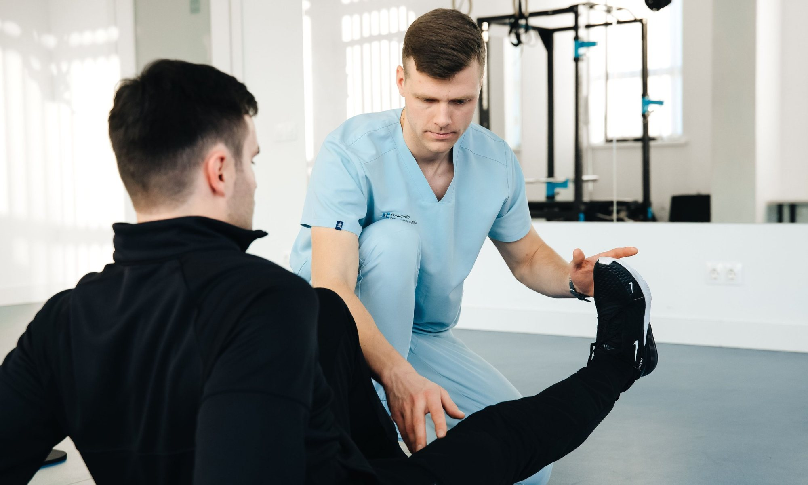
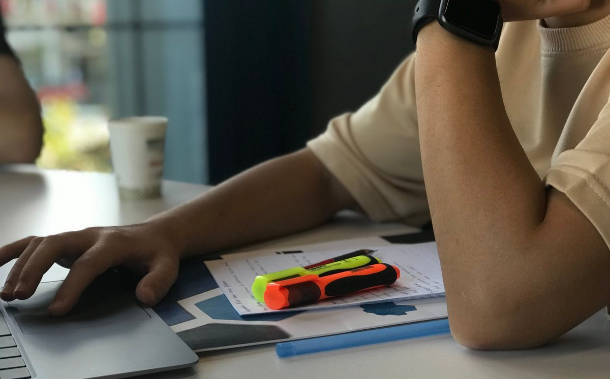
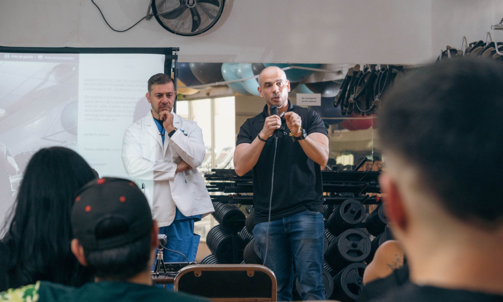
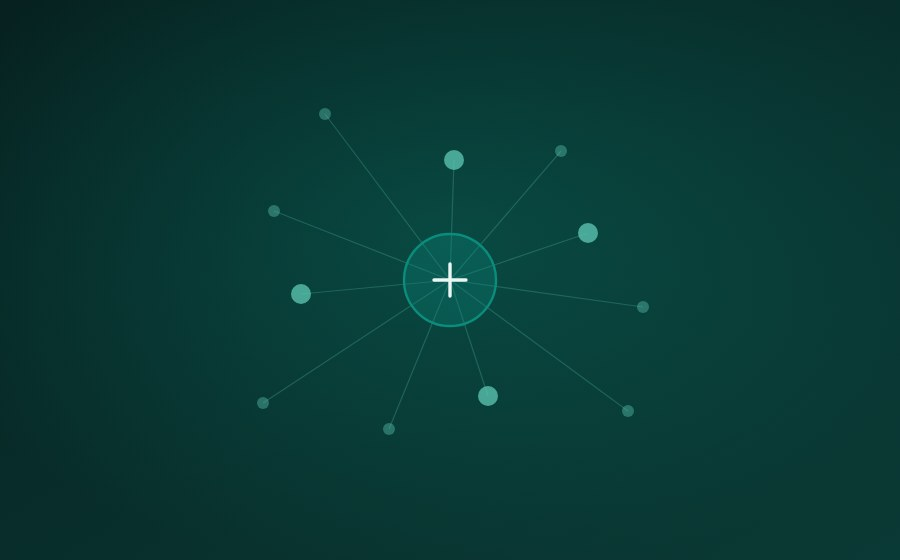

Expert content, interactive learning and clinical tools for physiotherapy students and professionals.
Free, no account needed · Built in Perth, Western Australia
No page is a stub with a paragraph and a hopeful link. Every one answers the same seventeen questions in the same order.

If a dosage cannot be traced to a source, it does not go on the page. If the evidence is thin, the page says so instead of rounding it up into confidence.

Every presentation, test, measure and exercise — written to one template, referenced throughout, and dated so you can see how current the evidence is.
Exam-style questions with worked reasoning on every option — why the wrong ones are wrong — each traced back to the page it came from.
Hours logged as you read, with the reference, the date and your reflection — exported in a form that survives an audit.
Reference content belongs in the open — that is how it gets used, shared and trusted. You pay for the tools that save you time and keep your learning proof in one place.
For students, and any clinician looking something up.
The whole reference library, every worked case, the video demos, Anki export and the full reference list on every page.
For registered clinicians with twenty hours a year to prove.
Adds the question bank, the research feed, CPD hours logged as you read, and a portfolio export that survives an audit.

Courses, reading, the thing you looked up between patients — it all counts, and most of it never gets written down. CliniPD banks it as you go, with the date and the source attached, so your CPD is never a scramble at the end of the year.
Share a protocol, bring your cohort, or report on your whole team. Everything submitted is reviewed by a physiotherapist before it goes live.

Protocols, handouts, assessment forms and teaching resources. Submit it with its references and we check it before publishing.
A cohort page mapped to your unit outlines, in your reading order, under your unit code — so students read what you examine.
Team accounts with shared CPD reporting, so a practice principal can see where the whole team sits long before November.
Eight presentations, fully referenced, free to read. If it isn't better than what you're using now, close the tab.